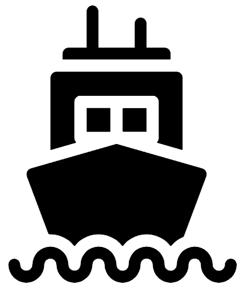

<mat-toolbar  class='custom-toolbar'>
    <div fxHide.gt-md>
        <button mat-icon-button (click)="onToggleSidenav()">
            <mat-icon>menu</mat-icon>
        </button>
    </div>
      <a routerLink="/">
        
        <a routerlink=''class="pad subtitle">De Atol</a>
      </a>
    <div fxFlex fxLayout fxLayoutAlign="end" fxHide.sm fxHide.xs>
        <ul fxLayout fxLayoutGap="15px" class="subtitle">
            <li>
                <a routerLink="">Home</a>
            </li>
            <li>
                <a routerLink="/overons">Over ons</a>
            </li>
            <li>
                <a routerLink="/diensten/veerdienst">Veerdienst</a>
            </li>
            <li>
                <a routerLink="/diensten/safari">Zeehondensafari</a>
            </li>
            <li>
                <a routerLink="/diensten/rondvaart">Rondvaart</a>
            </li>
            <li>
                <a routerLink="/diensten/feesten">Feesten en partijen</a>
            </li>
            <li>
                <a routerLink="/diensten/sportvissen">Sportvissen</a>
            </li>
            <li>
                <a routerLink="/contact">Contact</a>
            </li>
            <!-- <li>
                <a routerLink="/table">Table</a>
            </li>            
            <li>
                <a routerLink="/login">Inloggen</a>
            </li> -->
        </ul>
    </div>
  </mat-toolbar>